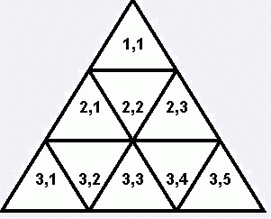
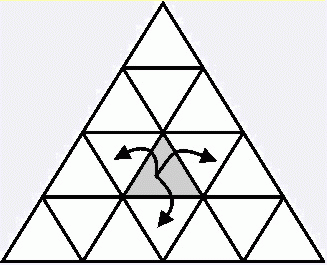

貝希被困在一個三角形的迷宮之中。這個迷宮有N行（1 <= N <= 1000000）。比如下圖是一個3行的迷宮。  迷宮的第i行有2*i-1個三角形，從左到右分別編號為（i，1）、（i，2）等等。 貝希每次可以從一個三角形走到任意一個一個跟當前的三角形有鄰邊的三角形。比如說，如果她目前處於三角形（3，3），那麼，她可以走到三角形（3，2）、（3，4）和（4，4）。貝希每次需要一分鐘的時間來移動到下一個三角形。  農夫約翰發現貝希被困了！於是她跟蹤貝希的iPhone手機（可憐的觸摸屏～），得知貝希目前處於三角形（Si，Sj）。因為約翰對貝希有著無窮無盡的濃濃愛意，所以他希望貝希能盡可能快地回到他的身邊。 在迷宮的三角形之中，有M（1 <= M <= 10000）個是出口。在任何一個出口都可以讓貝希逃離迷宮。一旦貝希進入一個作為出口的三角形，她用多一分鐘就可以逃離這個迷宮。 找到一個可以讓貝希逃離迷宮最小時間T，並輸出她應該從哪一個出口逃離迷宮，這個出口記為（OUTi，OUTj）。如果有多個出口同時需要時間T，輸出那個行的編號小的出口，如果仍然有多個出口，輸出那個列的編號小的。
| F.A.Qs | Home | Discuss | ProblemSet | Status | Ranklist | Contest | 入门OJ | ModifyUser Xeonacid | Logout | 捐赠本站 |
|---|